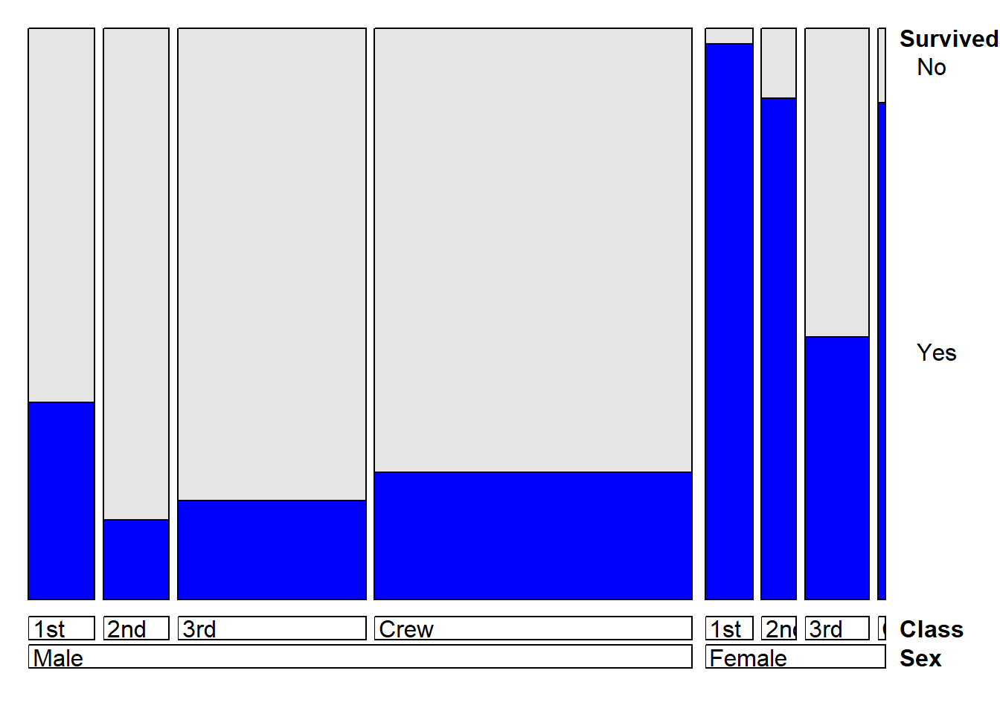
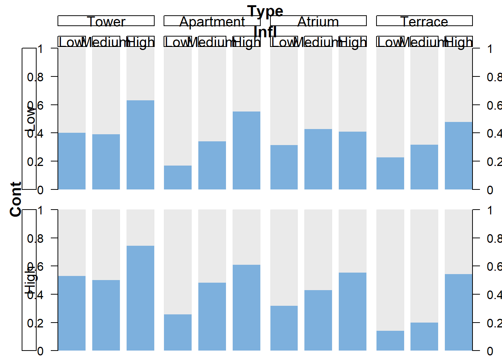

Lecture 1 Some R Base Plotting
#devtools::install_github("heike/extracat")
library("ggthemes")
library("GGally")## Loading required package: ggplot2## Registered S3 method overwritten by 'GGally':
## method from
## +.gg ggplot2library("extracat")
library(hdrcde)## This is hdrcde 3.4library(KernSmooth)## KernSmooth 2.23 loaded
## Copyright M. P. Wand 1997-2009library("ggplot2")
library("gridExtra")
library("vcd")## Loading required package: grid# The Titanic data revisited
Titanic1 <- data.frame(Titanic)
head(Titanic1)## Class Sex Age Survived Freq
## 1 1st Male Child No 0
## 2 2nd Male Child No 0
## 3 3rd Male Child No 35
## 4 Crew Male Child No 0
## 5 1st Female Child No 0
## 6 2nd Female Child No 0str(Titanic1)## 'data.frame': 32 obs. of 5 variables:
## $ Class : Factor w/ 4 levels "1st","2nd","3rd",..: 1 2 3 4 1 2 3 4 1 2 ...
## $ Sex : Factor w/ 2 levels "Male","Female": 1 1 1 1 2 2 2 2 1 1 ...
## $ Age : Factor w/ 2 levels "Child","Adult": 1 1 1 1 1 1 1 1 2 2 ...
## $ Survived: Factor w/ 2 levels "No","Yes": 1 1 1 1 1 1 1 1 1 1 ...
## $ Freq : num 0 0 35 0 0 0 17 0 118 154 ...p <- ggplot(Titanic1, aes(weight=Freq)) + ylab("") + ylim(0,2250)
cs <- p + aes(Class) + geom_bar(fill="blue")
sx <- p + aes(Sex) + geom_bar(fill="green")
ag <- p + aes(Age) + geom_bar(fill="tan2")
su <- p + aes(Survived) + geom_bar(fill="red")
grid.arrange(cs, sx, ag, su, nrow=1, widths=c(3, 2, 2, 2))
doubledecker(Survived ~ Sex, data = Titanic, gp = gpar(fill = c("grey90", "blue")))doubledecker(Survived ~ Sex, data = Titanic, gp = gpar(fill = c("grey90", "blue")))
doubledecker(Survived ~ Class, data = Titanic, gp = gpar(fill = c("grey90", "blue")))doubledecker(Survived ~ Sex + Class, data = Titanic, gp = gpar(fill = c("grey90", "blue")))
doubledecker(Survived ~ Class + Age, data = Titanic, gp = gpar(fill = c("grey90", "blue")))doubledecker(Survived ~ Sex + Class + Age, data = Titanic, gp = gpar(fill = c("grey90", "blue")))# Movies data
#install.packages("ggplot2movies")
library(ggplot2movies)
data(movies)
#?movies
ggplot(movies, aes(length)) + geom_bar() + ylab("") + xlab("Movie length (minutes)")
ggplot(movies, aes("var", length)) + geom_boxplot() + xlab("") +
ylab("Movie length (minutes)") + scale_x_discrete(breaks=NULL) + coord_flip()ggplot(movies, aes(length)) + ylab("") + xlim(0,180) +
geom_histogram(binwidth=1) +
xlab("Movie length (minutes)")## Warning: Removed 392 rows containing non-finite values (stat_bin).## Warning: Removed 2 rows containing missing values (geom_bar).ggplot(movies, aes(x = length)) + xlim(0,240) +
geom_histogram(binwidth=1) +
xlab("Movie length (minutes)") + ylab("")## Warning: Removed 114 rows containing non-finite values (stat_bin).
## Warning: Removed 2 rows containing missing values (geom_bar).ggplot(movies, aes(x = length)) + xlim(0,240) +
geom_histogram(aes(y=..density..),binwidth=1) +
xlab("Movie length (minutes)") + ylab("") +geom_density(colour="blue")## Warning: Removed 114 rows containing non-finite values (stat_bin).## Warning: Removed 114 rows containing non-finite values (stat_density).## Warning: Removed 2 rows containing missing values (geom_bar).ggplot(movies, aes(votes, rating,alpha=0.005)) + geom_point(size=0.25) + ylim(1,10) + ylab("Rating") + xlab("Votes")foo<-which(movies$votes>10000)
length(foo)## [1] 840ggplot(movies[foo,], aes(votes, rating)) + geom_point() + ylim(1,10) + ylab("Rating") + xlab("Votes")foo1<-which(movies$rating[foo]==min(movies$rating[foo]))
movies1<-movies[foo,]
movies1[foo1,]## # A tibble: 1 x 24
## title year length budget rating votes r1 r2 r3 r4 r5 r6
## <chr> <int> <int> <int> <dbl> <int> <dbl> <dbl> <dbl> <dbl> <dbl> <dbl>
## 1 Gigli 2003 121 54000000 2.3 11285 74.5 4.5 4.5 4.5 4.5 4.5
## # ... with 12 more variables: r7 <dbl>, r8 <dbl>, r9 <dbl>, r10 <dbl>,
## # mpaa <chr>, Action <int>, Animation <int>, Comedy <int>, Drama <int>,
## # Documentary <int>, Romance <int>, Short <int>foo2<-which(movies$rating[foo]==max(movies$rating[foo]))
movies2<-movies[foo,]
movies2[foo2,]## # A tibble: 2 x 24
## title year length budget rating votes r1 r2 r3 r4 r5 r6
## <chr> <int> <int> <int> <dbl> <int> <dbl> <dbl> <dbl> <dbl> <dbl> <dbl>
## 1 Godfath~ 1972 175 6 e6 9.1 122755 4.5 4.5 4.5 4.5 4.5 4.5
## 2 Shawsha~ 1994 142 2.5e7 9.1 149494 4.5 4.5 4.5 4.5 4.5 4.5
## # ... with 12 more variables: r7 <dbl>, r8 <dbl>, r9 <dbl>, r10 <dbl>,
## # mpaa <chr>, Action <int>, Animation <int>, Comedy <int>, Drama <int>,
## # Documentary <int>, Romance <int>, Short <int>temp<-sort(movies2$rating,decreasing=TRUE,index.return=TRUE)
temp$ix## [1] 331 673 452 332 675 144 153 451 453 600 654 723 726 2 147 168 170 239
## [19] 491 557 604 610 795 262 341 401 431 541 566 599 665 738 30 35 54 122
## [37] 128 236 286 460 483 506 583 683 686 745 757 765 799 37 53 137 164 347
## [55] 423 468 473 495 511 515 545 554 603 607 618 661 701 732 772 779 805 5
## [73] 27 29 33 50 132 175 234 290 348 370 392 416 417 499 507 543 611 619
## [91] 647 677 685 736 828 44 111 145 190 251 277 282 296 308 345 406 448 474
## [109] 555 569 580 598 663 689 748 822 829 21 68 93 100 166 189 208 215 291
## [127] 314 329 338 349 354 394 442 590 727 734 774 780 793 835 6 31 32 76
## [145] 92 101 133 222 229 231 247 312 327 352 396 458 465 498 510 527 585 679
## [163] 681 695 707 714 759 778 813 837 19 83 91 119 173 227 269 273 365 400
## [181] 420 429 447 497 519 588 605 622 636 650 672 697 712 750 766 773 785 794
## [199] 834 7 23 86 87 107 154 199 200 216 217 245 276 301 321 328 336 340
## [217] 362 391 403 445 461 464 500 525 537 548 559 612 616 630 680 699 703 756
## [235] 776 812 24 60 104 113 115 116 121 130 135 136 176 179 205 212 249 281
## [253] 284 294 307 356 357 359 367 459 469 513 529 551 552 591 625 644 666 783
## [271] 784 818 25 36 108 120 129 134 146 151 156 161 180 201 203 210 211 226
## [289] 233 253 259 265 311 315 369 377 381 476 536 539 606 638 649 676 684 704
## [307] 722 741 817 826 827 830 15 49 55 65 77 95 124 131 162 169 283 319
## [325] 320 386 405 430 434 437 479 501 517 549 579 582 592 597 601 602 648 662
## [343] 669 769 16 58 66 67 79 143 163 178 192 198 206 250 266 268 295 299
## [361] 302 303 330 351 366 379 389 411 463 471 480 508 528 564 584 595 617 623
## [379] 653 655 693 711 758 767 820 8 14 94 125 126 155 165 188 209 230 255
## [397] 261 274 289 306 313 333 343 361 382 385 387 390 397 409 444 446 455 472
## [415] 487 509 560 581 587 594 614 717 746 753 761 775 777 833 74 98 152 196
## [433] 238 246 280 298 309 310 342 363 395 398 413 518 524 530 533 575 577 637
## [451] 754 755 771 802 804 56 89 96 114 149 150 185 194 240 256 257 271 278
## [469] 285 339 371 443 467 481 538 558 628 640 682 708 715 739 744 747 781 792
## [487] 810 43 51 62 69 123 138 204 220 224 252 264 270 317 326 384 424 486
## [505] 490 544 562 563 629 635 658 691 698 713 725 733 743 751 782 803 40 402
## [523] 407 433 438 523 694 716 735 749 763 764 797 806 9 11 38 41 59 109
## [541] 172 219 293 304 305 318 323 325 335 346 350 360 415 462 477 492 567 568
## [559] 571 631 656 702 809 811 825 1 70 75 78 102 140 177 191 223 235 368
## [577] 436 454 484 553 570 586 633 642 671 692 706 729 760 832 839 46 71 103
## [595] 110 158 181 228 243 287 292 399 414 421 488 504 531 532 546 596 608 613
## [613] 667 737 752 801 815 821 823 47 63 82 106 184 197 275 288 422 441 449
## [631] 489 512 521 593 609 627 643 690 720 740 770 789 790 819 20 52 72 127
## [649] 142 186 187 195 221 373 425 428 435 478 516 522 540 561 705 724 728 768
## [667] 816 22 39 42 183 207 244 439 440 482 574 578 624 664 700 719 730 814
## [685] 831 17 61 118 167 171 232 248 358 376 388 494 502 576 620 641 718 742
## [703] 836 3 4 73 90 105 112 139 157 218 258 272 300 316 380 393 475 520
## [721] 565 572 670 791 838 28 48 174 297 410 419 470 485 496 550 556 668 731
## [739] 10 12 88 99 214 225 237 353 645 659 687 786 787 34 85 97 159 260
## [757] 267 344 355 375 418 526 547 615 634 721 788 800 57 141 182 202 263 279
## [775] 322 337 378 404 505 535 626 646 696 412 493 534 589 621 688 798 26 148
## [793] 213 450 456 514 651 674 762 807 840 13 81 193 408 427 432 573 639 660
## [811] 796 808 117 254 372 383 632 657 710 241 426 542 160 374 18 503 457 242
## [829] 364 466 334 652 45 824 678 80 64 709 84 324movies2[temp$ix,]## # A tibble: 840 x 24
## title year length budget rating votes r1 r2 r3 r4 r5 r6
## <chr> <int> <int> <int> <dbl> <int> <dbl> <dbl> <dbl> <dbl> <dbl> <dbl>
## 1 Godfat~ 1972 175 6 e6 9.1 122755 4.5 4.5 4.5 4.5 4.5 4.5
## 2 Shawsh~ 1994 142 2.5e7 9.1 149494 4.5 4.5 4.5 4.5 4.5 4.5
## 3 Lord o~ 2003 251 9.4e7 9 103631 4.5 4.5 4.5 4.5 4.5 4.5
## 4 Godfat~ 1974 200 1.3e7 8.9 71363 4.5 4.5 4.5 4.5 4.5 4.5
## 5 Shichi~ 1954 206 5 e5 8.9 32141 4.5 4.5 4.5 4.5 4.5 4.5
## 6 Buono,~ 1966 180 1.2e6 8.8 30224 4.5 4.5 4.5 4.5 4.5 4.5
## 7 Casabl~ 1942 102 9.5e5 8.8 66030 4.5 4.5 4.5 4.5 4.5 4.5
## 8 Lord o~ 2001 208 9.3e7 8.8 157608 4.5 4.5 4.5 4.5 4.5 4.5
## 9 Lord o~ 2002 223 9.4e7 8.8 114797 4.5 4.5 4.5 4.5 4.5 4.5
## 10 Pulp F~ 1994 168 8 e6 8.8 132745 4.5 4.5 4.5 4.5 4.5 4.5
## # ... with 830 more rows, and 12 more variables: r7 <dbl>, r8 <dbl>, r9 <dbl>,
## # r10 <dbl>, mpaa <chr>, Action <int>, Animation <int>, Comedy <int>,
## # Drama <int>, Documentary <int>, Romance <int>, Short <int>movies2[temp$ix,1]## # A tibble: 840 x 1
## title
## <chr>
## 1 Godfather, The
## 2 Shawshank Redemption, The
## 3 Lord of the Rings: The Return of the King, The
## 4 Godfather: Part II, The
## 5 Shichinin no samurai
## 6 Buono, il brutto, il cattivo, Il
## 7 Casablanca
## 8 Lord of the Rings: The Fellowship of the Ring, The
## 9 Lord of the Rings: The Two Towers, The
## 10 Pulp Fiction
## # ... with 830 more rowssummary(movies$year)## Min. 1st Qu. Median Mean 3rd Qu. Max.
## 1893 1958 1983 1976 1997 2005ggplot(movies, aes(length, rating)) + geom_point() + ylim(1,10) + ylab("Rating") + xlab("Length (minutes)")+ xlim(60,240)## Warning: Removed 10930 rows containing missing values (geom_point).# Berkeley data
ucba <- as.data.frame(UCBAdmissions)
a <- ggplot(ucba, aes(Dept)) + geom_bar(aes(weight=Freq))
b <- ggplot(ucba, aes(Gender)) + geom_bar(aes(weight=Freq))
c <- ggplot(ucba, aes(Admit)) + geom_bar(aes(weight=Freq))
grid.arrange(a, b, c, nrow=1, widths=c(7,3,3))
ucba <- within(ucba, Accept <- factor(Admit, levels=c("Rejected", "Admitted")))
doubledecker(xtabs(Freq~ Dept + Gender + Accept, data = ucba), gp = gpar(fill = c("grey90", "steelblue")))#Geyser Data
library(hdrcde)
data(geyser, package="MASS")
ggplot(geyser, aes(duration, waiting)) + geom_point() + ylab("Waiting time (minutes)") + xlab("Duration (minutes)")ggplot(geyser, aes(duration, waiting)) + geom_point() + geom_density2d() + ylab("Waiting time (minutes)") + xlab("Duration (minutes)")data(father.son, package="UsingR")
c2 <- ggplot(father.son, aes(sheight)) +
geom_histogram(aes(y = ..density..), binwidth=1) +
geom_density(colour="blue") + xlim(58, 80) + ylim(0, 0.16) +
xlab("Height (inches)") + ylab("") + ggtitle("Sons")
p2 <- ggplot(father.son, aes(fheight)) +
geom_histogram(aes(y = ..density..), binwidth=1) +
geom_density(colour="blue") + xlim(58, 80) + ylim(0, 0.16) +
xlab("Height (inches)") + ylab("") +
ggtitle("Fathers")
grid.arrange(c2, p2, nrow = 1)## Warning: Removed 2 rows containing missing values (geom_bar).
## Warning: Removed 2 rows containing missing values (geom_bar).qqnorm(father.son$sheight, main="Sons", xlab="",ylab="", pch=16, ylim=c(55,80))
qqline(father.son$sheight)qqnorm(father.son$fheight, main="Fathers", xlab="",ylab="", pch=16, ylim=c(55,80))
qqline(father.son$fheight)ggplot(father.son, aes(fheight, sheight)) + geom_point() +
geom_smooth(method="lm", colour="red", se=FALSE) +
geom_abline(slope=1, intercept=0) +xlab("Father's height (inches)")+ylab("Son's height (inches)")## `geom_smooth()` using formula 'y ~ x'ggplot(father.son, aes(fheight, sheight)) + geom_point() +
geom_smooth(method="lm", colour="red", se=TRUE) +
geom_abline(slope=1, intercept=0) +xlab("Father's height (inches)")+ylab("Son's height (inches)")## `geom_smooth()` using formula 'y ~ x'ggplot(father.son, aes(fheight, sheight)) + geom_point() +
geom_smooth(method="lm", colour="red", se=FALSE) +
stat_smooth() +xlab("Father's height (inches)")+ylab("Son's height (inches)")## `geom_smooth()` using formula 'y ~ x'## `geom_smooth()` using method = 'gam' and formula 'y ~ s(x, bs = "cs")'# Iris data
data(iris)
ggpairs(iris, aes(colour=Species, alpha=0.4)) ## `stat_bin()` using `bins = 30`. Pick better value with `binwidth`.## `stat_bin()` using `bins = 30`. Pick better value with `binwidth`.
## `stat_bin()` using `bins = 30`. Pick better value with `binwidth`.
## `stat_bin()` using `bins = 30`. Pick better value with `binwidth`.ggparcoord(iris, columns=1:4, groupColumn="Species")a <- ggplot(iris, aes("Boxplot for all", Sepal.Width)) +
xlab("") + geom_boxplot() +
scale_x_discrete(breaks=NULL)
b <- ggplot(iris, aes(Species, Sepal.Width)) +
geom_boxplot() + xlab("")
grid.arrange(a, b, nrow=1, widths=c(1,2))a <- ggplot(iris, aes("Boxplot for all", Petal.Width)) +
xlab("") + geom_boxplot() +
scale_x_discrete(breaks=NULL)
b <- ggplot(iris, aes(Species, Petal.Width)) +
geom_boxplot() + xlab("")
grid.arrange(a, b, nrow=1, widths=c(1,2))# Body data
data(body, package="gclus")
body1 <- body
names(body1) <- abbreviate(names(body), 2)
names(body1)[c(4:5, 11:13, 19:21)] <-
c("CDp", "CD", "Ch", "Ws", "Ab", "Cl", "An", "Wr")
a1 <- ggparcoord(body1, columns=1:24, alphaLines=0.1,groupColumn="Gn") + xlab("") + ylab("")
a2 <- ggparcoord(body1, columns=1:24, scale="uniminmax", alphaLines=0.1) + xlab("") + ylab("")
a3 <- ggparcoord(body1, columns=1:24, scale="globalminmax", alphaLines=0.1) + xlab("") + ylab("")
a4 <- ggparcoord(body1, columns=1:24, scale="center",scaleSummary="median", alphaLines=0.1) +xlab("") + ylab("")
grid.arrange(a1, a2, a3, a4)a1 <- ggparcoord(body1, columns=1:24, alphaLines=0.1,groupColumn="Gn") + xlab("") + ylab("")
a1body1$Gn<-as.factor(body1$Gn)
a1 <- ggparcoord(body1, columns=1:24, alphaLines=0.3,groupColumn="Gn") +xlab("") + ylab("")
a1a1 <- ggparcoord(body1, columns=1:24, alphaLines=0.1,groupColumn="Gn") + xlab("") + ylab("")
a2 <- ggparcoord(body1, columns=1:24, scale="uniminmax",groupColumn="Gn",alphaLines=0.1) + xlab("") + ylab("")
a3 <- ggparcoord(body1, columns=1:24,scale="globalminmax", alphaLines=0.1,groupColumn="Gn") + xlab("") + ylab("")
a4 <- ggparcoord(body1, columns=1:24, scale="center",scaleSummary="median", alphaLines=0.1,groupColumn="Gn") +xlab("") + ylab("")
grid.arrange(a1, a2, a3, a4)# Coffee data
data(coffee, package="pgmm")
coffee <- within(coffee, Type <- ifelse(Variety==1,"Arabica", "Robusta"))
names(coffee) <- abbreviate(names(coffee), 8)
ggpairs(coffee[,-c(1,2)], aes(colour=Type, alpha=0.4)) ## `stat_bin()` using `bins = 30`. Pick better value with `binwidth`.
## `stat_bin()` using `bins = 30`. Pick better value with `binwidth`.
## `stat_bin()` using `bins = 30`. Pick better value with `binwidth`.
## `stat_bin()` using `bins = 30`. Pick better value with `binwidth`.
## `stat_bin()` using `bins = 30`. Pick better value with `binwidth`.
## `stat_bin()` using `bins = 30`. Pick better value with `binwidth`.
## `stat_bin()` using `bins = 30`. Pick better value with `binwidth`.
## `stat_bin()` using `bins = 30`. Pick better value with `binwidth`.
## `stat_bin()` using `bins = 30`. Pick better value with `binwidth`.
## `stat_bin()` using `bins = 30`. Pick better value with `binwidth`.
## `stat_bin()` using `bins = 30`. Pick better value with `binwidth`.
## `stat_bin()` using `bins = 30`. Pick better value with `binwidth`.names(coffee)[6]<-"Ph"
ggpairs(coffee[,-c(1,2)], aes(colour=Type, alpha=0.4)) ## `stat_bin()` using `bins = 30`. Pick better value with `binwidth`.
## `stat_bin()` using `bins = 30`. Pick better value with `binwidth`.
## `stat_bin()` using `bins = 30`. Pick better value with `binwidth`.
## `stat_bin()` using `bins = 30`. Pick better value with `binwidth`.
## `stat_bin()` using `bins = 30`. Pick better value with `binwidth`.
## `stat_bin()` using `bins = 30`. Pick better value with `binwidth`.
## `stat_bin()` using `bins = 30`. Pick better value with `binwidth`.
## `stat_bin()` using `bins = 30`. Pick better value with `binwidth`.
## `stat_bin()` using `bins = 30`. Pick better value with `binwidth`.
## `stat_bin()` using `bins = 30`. Pick better value with `binwidth`.
## `stat_bin()` using `bins = 30`. Pick better value with `binwidth`.
## `stat_bin()` using `bins = 30`. Pick better value with `binwidth`.a <- ggplot(coffee, aes(x=Type)) + geom_bar(aes(fill=Type)) +
scale_fill_manual(values = c("grey70", "red")) +
guides(fill=FALSE) + ylab("")## Warning: `guides(<scale> = FALSE)` is deprecated. Please use `guides(<scale> =
## "none")` instead.b <- ggplot(coffee, aes(x=Fat, y=Caffine, colour=Type)) +
geom_point(size=2) +
scale_colour_manual(values = c("grey70", "red"))
c <- ggparcoord(coffee[order(coffee$Type),], columns=3:14,
groupColumn="Type", scale="uniminmax") +
xlab("") + ylab("") +
theme(legend.position = "none") +
scale_colour_manual(values = c("grey","red")) +
theme(axis.ticks.y = element_blank(),
axis.text.y = element_blank())
grid.arrange(arrangeGrob(a, b, ncol=2, widths=c(1,2)), c, nrow=2)# Housing data
library(vcd)
data(housing, package="MASS")
?housing## starting httpd help server ...## donemosaic(xtabs(Freq ~ Cont + Type + Infl + Sat, data = housing),
direction = c("h", "v", "v", "h"),
gp = gpar(fill = c("grey", "grey","blue")),
spacing = spacing_highlighting)par(mar=c(5, 4, 4, 2) + 0.1)
rmb(formula = ~Type+Cont+Infl+Sat, data = housing, cat.ord = 3,
spine = TRUE, freq.trans = "const")
# Crime data
data(crime.us, package="VGAMdata")
crime1<-crime.us
names(crime1)<-gsub("*Rate","",names(crime1))
names(crime1)[19:20]<-c("Larceny","MVTheft")
ggpairs(crime1[,c(13:16,18:20)],diag=list(continuous="densityDiag"),axisLabels="none") # Boston data
data(Boston, package="MASS")
par(mar=c(1.1, 1.1, 1.1, 1.1))
palette(rainbow(14, s = 0.6, v = 0.75))
stars(Boston[1:12,], labels=NULL, draw.segments = TRUE)stars(Boston, labels=NULL, draw.segments = TRUE)
par(mar=c(5, 4, 4, 2) + 0.1)